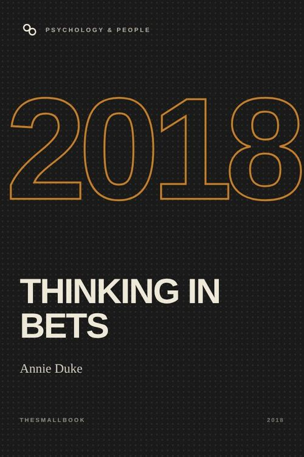

Library › Ask the Library › How do I make better decisions in uncertain situations?
How do I make better decisions in uncertain situations?
The short answer
Life is poker, not chess, luck is always in the mix. Judge decisions by the process, not the outcome: attach a probability, widen your 'could', and update when new evidence arrives.
The books behind the answer

Thinking in Bets
Annie Duke · 2018 · 8 min · 6 lessons
Every decision is a bet. Stop judging decisions by outcomes - judge them by the quality of the process.
- Life Is Poker, Not Chess: Every decision is a bet on an uncertain future, stop needing to be right, start wanting to be accurate.
- Outcomes Are Not Report Cards: A bad outcome doesn't mean a bad decision. Judge the process, not the roll of the dice.
- Widen Your 'Could', Think in Frequencies: Replace 'this WILL work' with 'this works 70% of the time', probabilities keep you open to evidence.

The Art of Strategy
Avinash Dixit & Barry Nalebuff · 1991 · 8 min · 6 lessons
Life is a game of interdependent moves. Win by thinking about what others will do - and what they think you'll do.
- Think Two Moves Ahead: Backward Induction: Start from the end you want and reason backward, the person who thinks ahead beats the reactor.
A failure that proves it
Why did Long-Term Capital Management fail?
1998 · FAME · Loss: $4.6B in 4 months
LTCM's Nobel-winning geniuses made one overconfident bet and lost everything. Even geniuses need a margin of error.
Genius plus leverage equals fragility. The smartest people fail the biggest because their confidence is the best-documented - room for error isn't stupidity insurance; it's genius insurance.
Also asked in Hindi and Hinglish
People also ask this as: uncertain time mein sahi faisla kaise lein. The answer on this page stays in simple English, and the live book can be read in Hindi or Hinglish.
Questions people ask next
Can I read this in Hindi?
Yes. This answer is written in simple English. Open any linked book and choose Hindi or Hinglish to read the full lessons in your language, with audio where available.